Pour mon mémoire portant sur la prise de conscience du risque d’inondation, une vingtaine de visuels ont été réalisés et testés via un sondage afin d’évaluer leur réception. For my essay on flood risk awareness, I produced around twenty visuals and tested them through a survey to assess audience perception and effectiveness.
L’objectif était de comprendre quels éléments visuels et quels tons favorisent au mieux l’identification du risque et la prise de conscience. Ici, l’incendie a été utilisé à titre d’exemple, événement comparable aux inondations, puisque toutes deux sont des catastrophes liées au dérèglement climatique. The objective was to identify which visual elements and tones most effectively communicate risk and raise awareness. Here, wildfire is used as a case study, an event comparable to flooding, as both are disasters linked to climate change.
 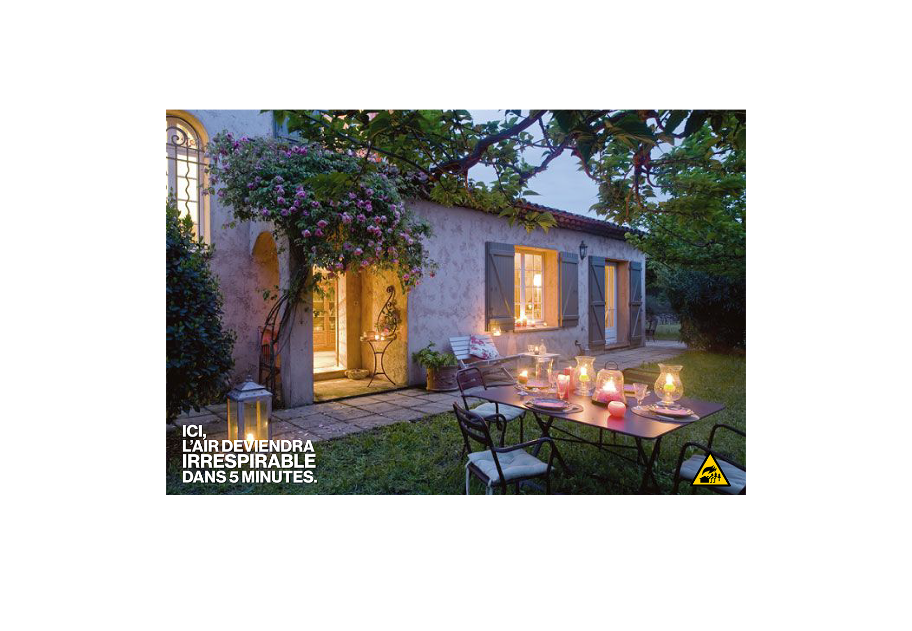
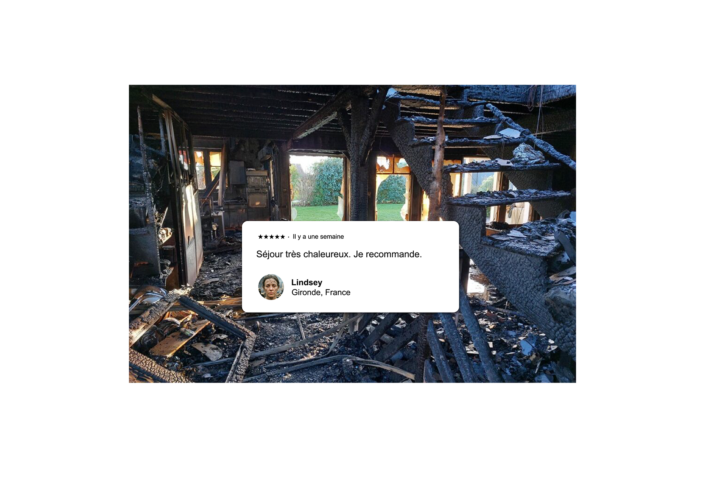
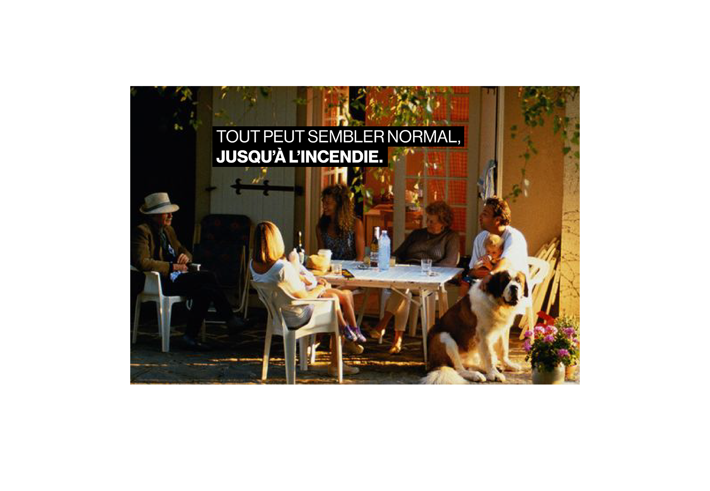
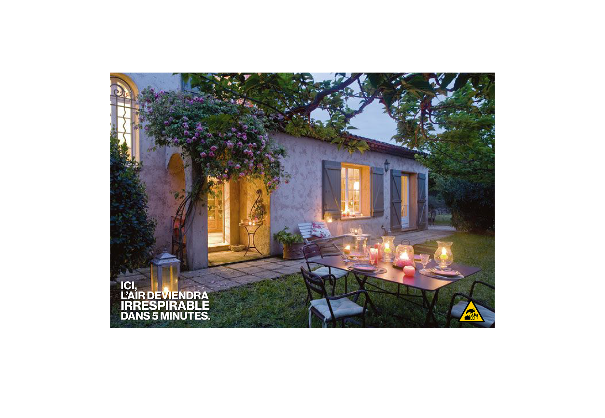
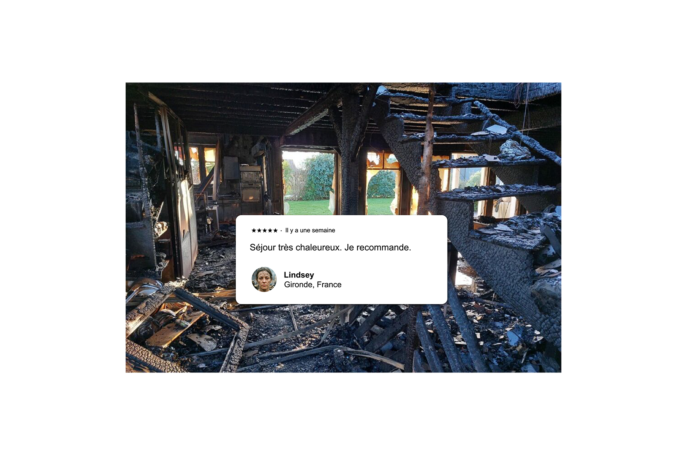
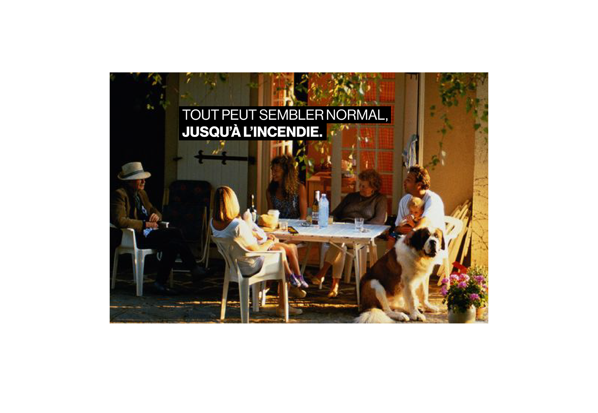
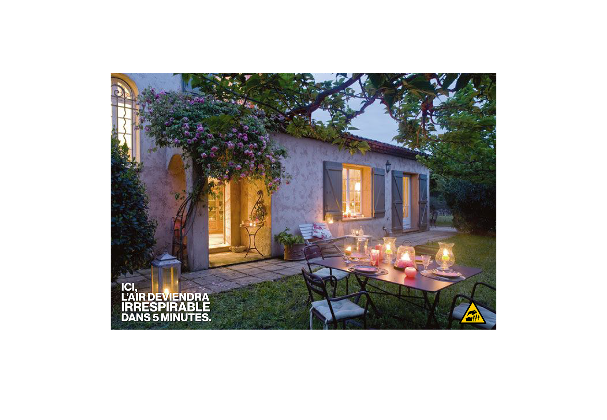
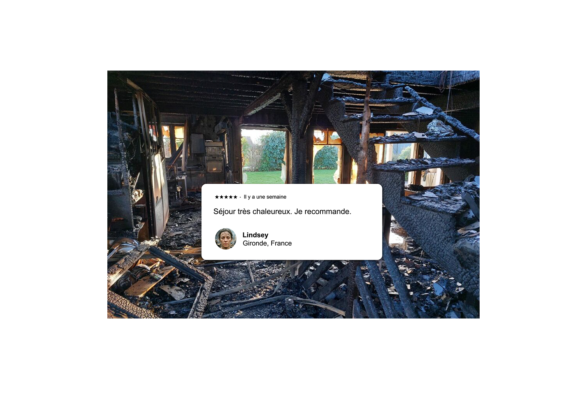
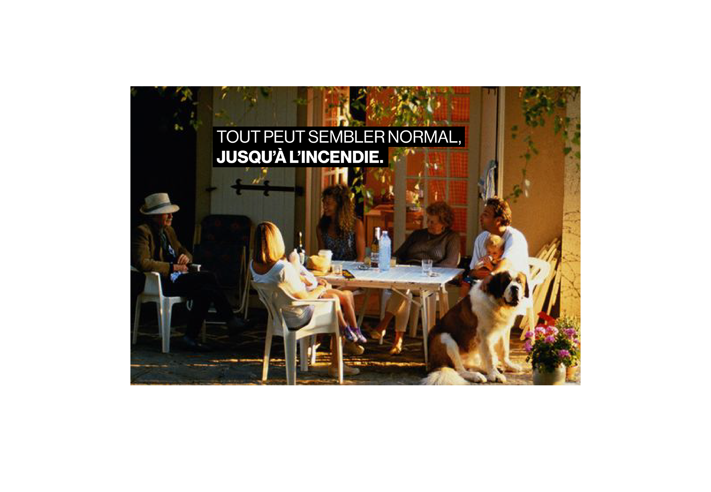
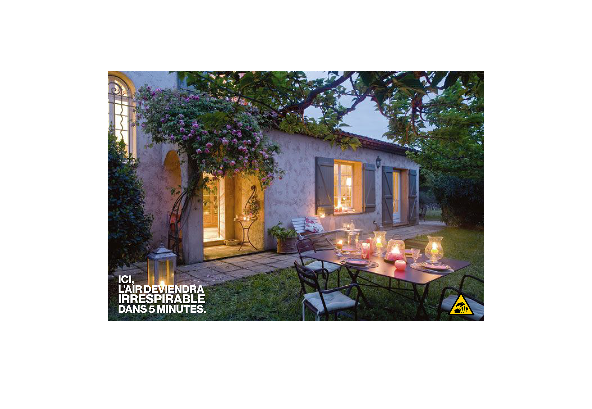
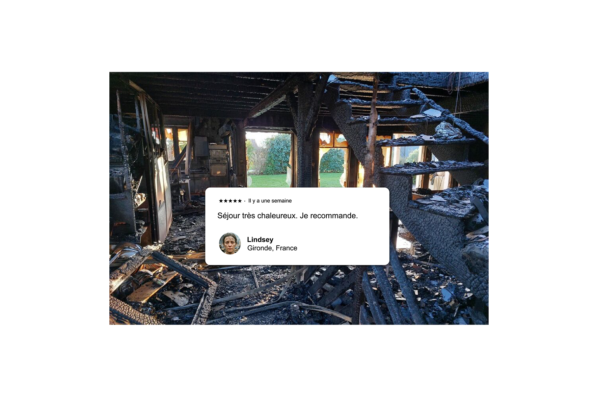
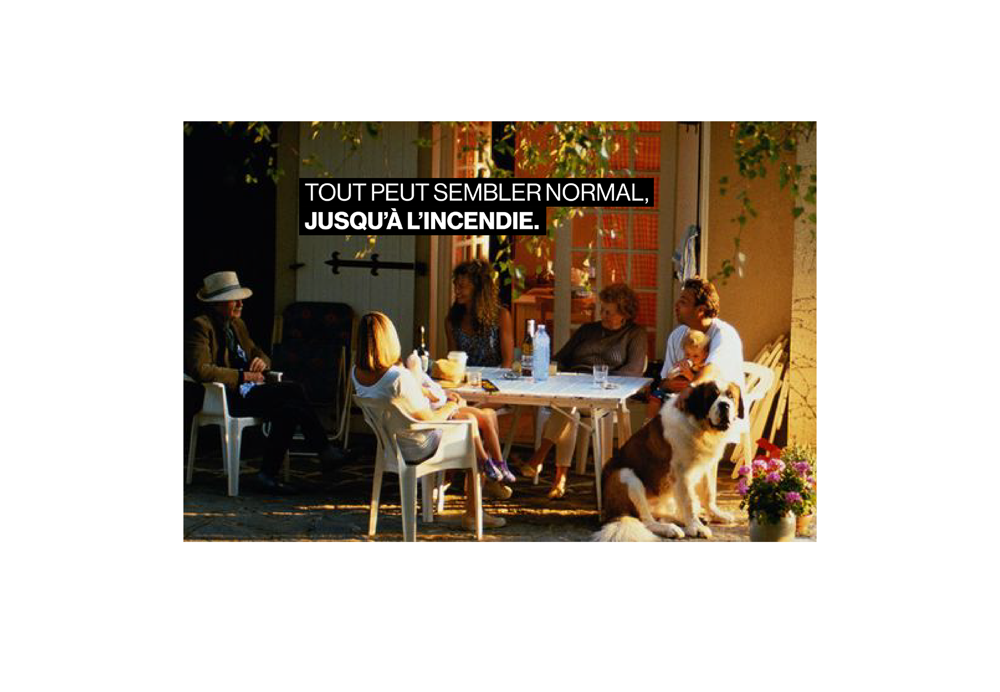